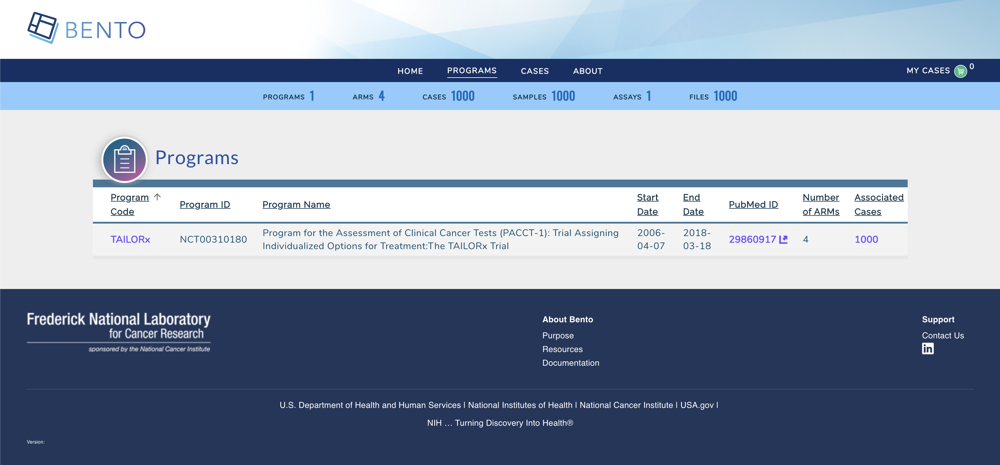

3. Deploying Bento on AWS¶
This is the user documentation on provisioning bento on AWS.
3.1. A. Introduction¶
The purpose of this guide is to provide instructions on how to provision and deploy Bento Framework on AWS cloud platform. This guide assumes that the Custodian has an operating account with Amazon Web Services Amazon Web Services and all the necessary administrator’s IAM role and permissions in order to create cloud resources.
3.1.1. B. Disclaimer¶
AWS is a Pay As You Go provider, as result the use of this instruction may result in usage charges. We’re in no way responsible for any charges incurred from resources created using this documentation.
All scripts related to this documentation can be found here: Bento Custodian
3.2. C. Architecture¶
The code in this demo will create the following resources via Terraform:
A new VPC and subnets
Application loadbalancer
Bastion Host
ECS cluster with one EC2 node
Neo4j Database in private subnet
3.3. D. Pre-requisites¶
Ensure you have the following tools installed and configured before proceeding. All instructions provided here assumes you have unix-like environment
3.3.1. a) AWS CLI¶
Follow the instructions on official Amazon Web site to install AWS CLI on your local machine using platform instruction applicable to you.
3.3.2. b) Configure AWS Credentials¶
Please ensure you have aws credential configured for your environment aws credentials. This document does not make provision for access and secret keys due to unintended security reasons.
3.3.3. c) Terraform¶
Follow the instructions on the official Terraform site to install terraform on your local workstation using platform instruction applicable to you.
3.4. E. Installations¶
3.4.1. a) Clone Bento Framework¶
Clone Bento Framework to a working directory. In this guide, I will be using /tmp as my working directory
bento@custodian: cd /tmp && git clone https://github.com/CBIIT/bento-custodian
Change directory to the scripts location bento-custodian/terraform/aws
bento@custodian: cd bento-custodian/terraform/aws
3.4.2. b) Populate vars.tfvars file¶
Using your favorite text editor open and edit ${WORKING-DIRECTORY}/bento-custodian/terraform/aws/vars.tfvars file. This is a variable file that will be used as input to the terraform.
Please refer to ${WORKING-DIRECTORY}/bento-custodian/terraform/aws/variables.tf file for full descriptions of each the variables listed in the vars.tfvars file.
At minimum, you will need to provide appropriate values for the following;
profile - This is the name of the aws crendential profile you set above in step D.a
region - This is the aws region you wish to provision your resources.
Run terraform init
bento@custodian:~$ terraform init
Run terraform plan. This command gives you insight into all the resources that will be created. Review the output and if satisfy continue to the next step
bento@custodian:~$ terraform plan -var-file=vars.tfvars
Run terraform apply to provision your infrastructure for the bento framework
bento@custodian:~$ terraform apply -var-file=vars.tfvars -auto-approve
At this point, if there are no errors your infrastructure will be provisioned. Note it will take about 10 minutes for the application to completely deployed.
Apply complete! Resources: 68 added, 0 changed, 0 destroyed.
Outputs:
admin_user = evay
bastion_host_ip = 12.13.14.15
custodian_api_endpoint = http://evay-alb-2073444928.us-east-1.elb.amazonaws.com/api/graphql/
custodian_url = http://evay-alb-2073444928.us-east-1.elb.amazonaws.com
3.4.3. c) Monitor Deployment Progress¶
Open SSM
Click State Manager in the left pane of the navigation
You will see the current status of the deployment. If everything goes well the status should change from Pending to Success as shown below.

3.4.4. d Verify Deployment¶
When the deployment is completed, navigate to the *custodian_url* to verify that the application is loaded successfully.
Home page

Cases Page

Program Page 
3.4.5. e) Teardown¶
To destroy resouces created in this demo;
Run terraform destroy to destroy the resources provisioned.
bento@custodian:~$ terraform destroy -var-file=vars.tfvars -auto-approve
3.5. F. Application Updates¶
Many times, there are needs to customize Bento Framework based on your unique needs or some requirements, to make updates to the existing resources, it is recommended to fork both frontend and backend repositories used in this demo - that is backend and frontend. Follow below steps to apply any changes made to either backend or frontend codes.
3.5.1. a) Edit vars.tfvars file¶
Using your favorite text editor open and edit ${WORKING-DIRECTORY}/bento-custodian/terraform/aws/vars.tfvars file.
Replace the values of backend_repo and frontend_repo with the new url of your forked repositories as shown below;

3.5.2. b) Apply changes to terraform state¶
Run terraform apply
bento@custodian:~$ terraform apply -var-file=vars.tfvars -auto-approve
3.5.3. c) Apply Changes using Ansible¶
From the current working location change directory to ${WORKING-DIRECTORY}/bento-custodian/terraform/aws/ansible
bento@custodian:~$ cd ansible
Run ansible-playbook update-custodian.yml to deploy changes committed to git repository. Note, if you wish to apply updates using git tags, edit ${WORKING-DIRECTORY}/bento-custodian/terraform/aws/ansible/vars.yaml file by supplying appopriate tag values to:
frontend_tag - git tag for forked frontend repository
backend_tag - git tag for forked backend repository
It is also recommended to change docker tag (image_tag) in between changes.
bento@custodian:~$ ansible-playbook update-custodian.yml
3.6. G. Data Model Updates¶
3.6.1. a) Edit vars.tfvars file¶
Using your favorite text editor open and edit ${WORKING-DIRECTORY}/bento-custodian/terraform/aws/vars.tfvars file.
Replace the values of data_repo with the new url of your forked data-model repository.
3.6.2. b) Apply changes to terraform state¶
Run terraform apply
bento@custodian:~$ terraform apply -var-file=vars.tfvars -auto-approve
3.6.3. c) Apply Changes using Ansible¶
From the current working location change directory to ${WORKING-DIRECTORY}/bento-custodian/terraform/aws/ansible
bento@custodian:~$ cd ansible
Run ansible-playbook update-db.yml to load data to neo4j database from changes committed to data model repository. Note, if you wish to apply updates using git tags, edit ${WORKING-DIRECTORY}/bento-custodian/terraform/aws/ansible/vars.yaml file by supplying appopriate tag value to:
data_tag - git tag for forked data model repository
You may optionally change the values of model_file_name, dataset and properties_file_name if those files have been modified and the files renamed from default.
Details notes are given in ${WORKING-DIRECTORY}/bento-custodian/terraform/aws/ansible/vars.yaml as to what each parameter represents
bento@custodian:~$ ansible-playbook update-db.yml